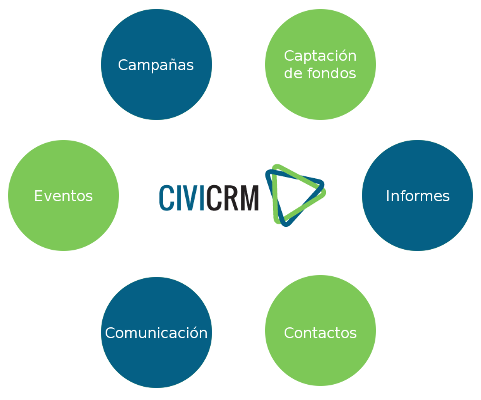

(III) Principales líneas de actuación en Catalunya
Apoyo socioeducativo a menores, adolescentes y jóvenes en riesgo social y actividades educativas en el tiempo libre
Atención social, psicológica y asesoría jurídica a población vulnerable
Formación laboral a población vulnerable y en proceso de búsqueda de trabajo
Acogida sociolingüítica a población immigrante
Acompañamiento a personas internas en Centros de Internamiento de Extranjeros
Banco de alimentos
Reflexión social
Punto de partida y motivación
¡Houston, tenemos un problema!
De la dispersión a la centralización de los datos
Caso típico (I)
"Organización pequeña que va creciendo progresivamente incrementando a su vez la complejidad de su gestión como también la base de personas atendidas"
Un amigo de la organización creó una base de datos personalizada para la gestión de los beneficiarios de la entidad.
Necesitamos guardar a partir de ahora la edad de los beneficiarios. El que creó la base de datos a desaparecido y no sabemos como hacerlo.
De la dispersión a la centralización de los datos
Caso típico (II)
"Organización pequeña que va creciendo progresivamente incrementando a su vez la complejidad de su gestión como también la base de personas atendidas"
Cada programa del centro tiene los datos de su red de contactos en una hoja de cálculo distinta.
Estamos a punto de lanzar una campaña para recoger fondos para unos campamentos de verano y tendremos que abrir la hoja de cálculo de cada programa del centro, mezclar los contactos y vigilar que no hayan duplicados.
De la dispersión a la centralización de los datos
Caso típico (III)
"Organización pequeña que va creciendo progresivamente incrementando a su vez la complejidad de su gestión como también la base de personas atendidas"
La responsable de voluntariado tiene un documento con todos los datos de los voluntarios.
Se ha dado de baja un voluntario y nos iría bien hacer una llamada a los voluntarios que ya han pasado por el centro por si pueden cubrir esta plaza por el mes que queda. La responsable de voluntariado está de baja y no encontramos los datos de los voluntarios.
Cuando empieza a imperar el caos
Llega al rescate

Resultado
Apuesta estratégica por CiviCRM como herramienta de gestión en 5 de las 6 entidades del sector social SJ
Implementación
Módulo Infancia
El éxito de la implementación
O porque no cumplir la carta a los reyes magos
Adaptar al máximo los procesos de la organización a las capacidades de CiviCRM y NO que el CRM se tenga que adaptar a los procesos de la organización
Implementación módulo infancia
(I) Contactos
Tipos de contacto persona: niño; adulto
Tipos de contacto familia: unidad familiar y de convivencia
Tipos de contacto organización: centro educativo
A cada tipo de contacto se le puede asignar uno o más conjuntos de campos personalizados.
Implementación módulo infancia
(II) Relaciones
Relaciones familiares: un niño es hijo de un adulto; un adulto es miembro de una unidad familiar y de convivencia
Relaciones escolares: un niño estudia en un centro educativo
Otras relaciones: un niño es beneficiario de una beca concedida por una organización; un niño recibe atención de una organización
Las relaciones también pueden tener uno o más conjuntos de campos personalizados.
Implementación módulo infancia
(III) Actividades
Actividades vinculadas a niños: registro de documentación; entrega de un cheque social; registro de resultados académicos
Actividades vinculadas a adultos: registro de situación económica; registro de situación laboral
También! Las actividades pueden tener uno o más conjuntos de campos personalizados. Campos personalizados everywhere!
Implementación módulo infancia
(IV) Eventos
Creamos distintos tipos de eventos para los distintos programas de infancia del centro
Creamos un evento para cada grupo. Por lo general el evento se extiende a lo largo de un curso
Inscribimos a los niños como participantes del evento. Si es necesario podemos definir tarifas para el evento para registrar el pago de cuotas
Otras implementaciones y retos futuros
Un CiviUniverso de posibilidades
Otras implementaciones
Módulo banco de alimentos
Módulo atención social
Módulo voluntarios
Módulo comunicación
Retos futuros
Captación de fondos (socios, donantes, financiadores)
Integración con la web
Informes personalizados
Inscripciones a cursos y autorizaciones
Reportar, participar, colaborar y actualizar!
Logros y dificultades
Algunos pros y contras a tener en cuenta
Dificultades
Técnicas y de gestión de proyecto
Cierre de las características de la implementación y migración de datos inicial
CiviCRM (ningún software) no es perfecto. Detección de bugs, algunos de solución con coste poco asumible para las organizaciones
Gestión engorrosa de controles de acceso a los datos
Reticencias iniciales de los usuarios (sobretodo perfiles con pocas habilidades con las TIC)
Logros
Técnicos y de gestión de proyecto
Implementación prácticamente idéntica y sólida para las distintas organizaciones (suma de conocimiento y experiencias)
Creación de sinergias entre entidades y unificación y estandarización de procesos comunes
Ningún desarrollo a medida que pueda dificultar el mantenimiento y la actualización futura de la herramienta (puro CiviCRM)
Increíble fortaleza de la comunidad CiviCRM: participación, foros, documentación, profesionales expertos, desarrollo y mantenimiento continuo del proyecto, etc.